+\varepsilon")
Das Ziel der nichtlinearen Anpassung ist es, die Parameterwerte abzuschätzen, die die Daten am besten beschreiben. Allgemein können wir den Prozess der nichtlinearen Kurvenanpassung wie unten beschreiben.
Origin enthält Optionen für verschiedene Algorithmen, die unterschiedliche iterative Prozeduren und Statistiken haben, um die minimale Distanz zu definieren.
Ein allgemeines nichtlineares Modell kann wie folgt ausgedrückt werden:
|
(1) |
wobei '") die unabhängige Variable und
die unabhängige Variable und '") der Parameter ist.
der Parameter ist.
|
Beispiele für die explizite Funktion |
Der Algorithmus der kleinsten Quadrate besteht darin, die Parameter zu wählen, die die Abweichungen der theoretischen Kurve(n) von den experimentellen Punkten minimieren. Diese Methode wird auch Chi-Quadrat-Minimierung genannt und wird wie folgt definiert:
| 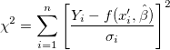 | (2) |
wobei 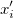 der Zeilenvektor für die i-te (i = 1, 2, …, n) Beobachtung ist.
|
Diese Abbildung stellt das Konzept in einem einfachen linearen Modell dar (Beachten Sie, dass die mehrfache Regression und der nichtlineare Fit sich ähneln). Die am besten angepasste Kurve stellt das angenommene theoretische Modell dar. Für einen bestimmten Punkt Gibt es zwei unabhängige Variable im Regressionsmodell, minimiert das Schätzen der kleinsten Quadrate die Abweichung der experimentellen Datenpunkte zur am besten angepassten Oberfläche. Gibt es mehr als 3 unabhängige Variablen, ist das angepasste Modell eine Hyperfläche. In diesem Fall wird die angepasste Oberfläche (oder Kurve) nach der Regression nicht gezeichnet. |
Origin bietet zwei Optionen, um die Parameterwerte in der iterativen Prozedur anzupassen.
Der Algorithmus Levenberg-Marquardt (L-M)11 ist eine iterative Prozedur, die die Gauss-Newton-Methode und die Methode des steilsten Abstiegs kombiniert. Der Algorithmus funktioniert gut für die meisten Fälle und ist Standard für nichtlineare Routinen der kleinste Quadrate.
 .
. , sagen wir = 0,001.
, sagen wir = 0,001.") aus.
aus. \geq \chi ^2(b)") , erhöhen Sie um einen Faktor von 10 und kehren Sie zurück zu Schritt 3.
, erhöhen Sie um einen Faktor von 10 und kehren Sie zurück zu Schritt 3. \leq \chi ^2(b)") , verringern Sie um einen Faktor von 10, aktualisieren Sie die Parameterwerte auf und kehren Sie zurück zu Schritt 3.
, verringern Sie um einen Faktor von 10, aktualisieren Sie die Parameterwerte auf und kehren Sie zurück zu Schritt 3.Neben der L-M-Methode bietet Origin auch eine Downhill-Simplex-Approximation9,10. In der Geometrie ist ein Simplex ein Polytop von N + 1 Sattelpunkten in N Dimensionen. Bei einer nichtlinearen Optimierung existiert ein Analogon für eine Zielfunktion von N Variablen. Während der Iterationen passt der Simplex-Algorithmus (auch bekannt als Nelder-Mead) den Parameter "Simplex" an, bis er bis zu einem lokalen Minimum konvergiert.
Anders als die L-M-Methode benötigt die Simplex-Methode keine Ableitungen und bleibt effektiv, auch wenn die Rechenbelastung gering ist. Normalerweise, wenn Sie keinen guten Wert für die Parameterinitialisierung erhalten haben, können Sie diese Methode ausprobieren, um den ungefähren Parameterwert zur weiteren Anpassungsberechnung mit L-M zu erhalten. Die Simplex-Methode ist insofern stabiler, als dass sie weniger in unbedeutendere Bereiche des Parameterraums wandert; allerdings ist sie im Allgemeinen langsamer als L-M, besonders in der Nähe eines lokalen Minimums. Tatsächlich gibt es keinen "perfekten" Algorithmus für eine nichtlineare Anpassung, und vieles kann das Ergebnis beeinflussen (z.b. Initialisierungswerte). Bei komplizierten Modellen ist eine Methode vielleicht besser geeignet als eine andere. Außerdem möchten Sie vielleicht beide Methoden testen, um die Anpassungsoperation durchzuführen.
Der Algorithmus der ODR (Orthogonale Distanzregression) minimiert die Summe der Fehlerquadrate, indem sowohl Anpassungsparameter und Werte der unabhängigen Variable in dem iterativen Prozess angepasst werden. Das Residuum in der ODR ist nicht die Differenz zwischen dem beobachteten Wert und dem vorhergesagten Wert für die abhängige Variable, sondern die orthogonale Distanz zwischen den Daten zu der angepassten Kurve.
Origin verwendet den ODR-Algorithmus in ODRPACK958.
Für eine explizite Funktion könnte der ODR-Algorithmus folgendermaßen ausgedrückt werden:
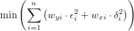
unterliegt den Nebenbedingungen:
wobei 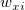 und 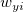 die Gewichtungen der Anwendereingabe von  und
und  sind sowie
sind sowie  und 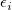 das Residuum der entsprechenden und .
und 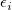 das Residuum der entsprechenden und .  ist der Anpassungsparameter.
ist der Anpassungsparameter.
Weitere Einzelheiten zum ODR-Algorithmus finden Sie unter ODRPACK958.
Um zwischen ODR- und L-M-Algorithmus für Ihre Anpassung zu wählen, können Sie in der folgenden Informationstabelle nachlesen:
| Orthogonale Distanzregression | Levenberg-Marquardt | |
|---|---|---|
| Anwendung | Implizite und explicit Funktionen | Nur explizite Funktionen |
| Gewichtung | Unterstützt sowohl X- als auch Y-Gewichtung | Unterstützt nur Y-Gewichtung |
| Residuumsquelle | Die orthogonale Distanz von den Daten zu der angepassten Kurve | Die Differenz zwischen dem beobachteten Wert und dem vorhergesagten Wert |
| Iterationsprozess | Anpassen der Werte der Anpassungsparameter und der unabhängigen Variablen | Anpassen der Werte der Anpassungsparameter |
Eine allgemeine implizite Funktion könnte ausgedrückt werden mit:
| (5) |
wobei und '") Variablen sind, die Anpassungsparameter sind und
Variablen sind, die Anpassungsparameter sind und  eine Konstante ist.
eine Konstante ist.
|
Beispiele für die implizite Funktion:
|
Die ODR-Methode kann für sowohl implizite als auch explizite Funktionen verwendet werden. Um weitere Einzelheiten der ODR-Methode zu erfahren, lesen Sie bitte die Beschreibung der ODR-Methode im obigen Abschnitt.
Für implizite Funktionen könnte der ODR-Algorithmus folgendermaßen ausgedrückt werden:
 \right )")
unter der Bedingung:
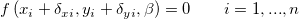
wobei und die Gewichtungen der Anwendereingabe von und sind sowie und  das Residuum der entsprechenden und . ist der Anpassungsparameter.
das Residuum der entsprechenden und . ist der Anpassungsparameter.
Sind die Messfehler unbekannt, wird  für alle i auf 1 gesetzt und die Anpassung ohne Gewichtung ausgeführt. Sind die Fehler aber bekannt, können wir diese Fehler als Gewichtungen betrachten und gewichtete Anpassung verwenden. In diesem Fall kann Chi^2 wie folgt dargestellt werden:
für alle i auf 1 gesetzt und die Anpassung ohne Gewichtung ausgeführt. Sind die Fehler aber bekannt, können wir diese Fehler als Gewichtungen betrachten und gewichtete Anpassung verwenden. In diesem Fall kann Chi^2 wie folgt dargestellt werden:
|
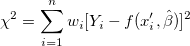 |
(6) |
Es sind eine Reihe von gewichteten Methoden in Origin verfügbar. Bitte entnehmen Sie weitere Informationen dem Abschnitt Anpassen mit Fehlern und Gewichtung in der Origin-Hilfe.
Die mit der Anpassung verbundenen Formeln werden hier zusammengefasst:
Das Berechnen der angepassten Werte in nichtlinearer Regression ist eine iterative Vorgehensweise. Sie können eine kurze Einführung in dem oben stehenden Abschnitt lesen (So passt Origin die Kurve an) oder sich mit Hilfe des unten erwähnten Materials weiterführend informieren.
Während der L-M-Iteration müssen wir die partielle Ableitungsmatrix F berechnen, deren Element in der i-ten Zeile und der j-ten Spalte folgendermaßen lautet:
|
(7) |
wobei  der Fehler von Y für die i-te Beobachtung ist, falls das instrumentelle Gewicht verwendet wird. Falls es kein Gewicht gibt, . Und 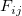 wird für jede Beobachtung
der Fehler von Y für die i-te Beobachtung ist, falls das instrumentelle Gewicht verwendet wird. Falls es kein Gewicht gibt, . Und 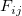 wird für jede Beobachtung  in jeder Iteration ausgewertet.
in jeder Iteration ausgewertet.
Anschließend können wir die Varianz-Kovarianz-Matrix für die Parameter wie folgt ermitteln:
|
|
(8) |
wobei die Transponierte der F-Matrix ist. s2 ist die mittlere Residuenvarianz, auch als Reduziertes Chi-Quadrat bezeichnet oder die Abweichung des Modells, und kann folgendermaßen berechnet werden:
|
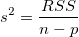 |
(9) |
wobei n die Anzahl der Punkte ist und p die Anzahl der Parameter.
Die Quadratwurzel des diagonalen Hauptwerts dieser Matrix C ist der Standardfehler des entsprechenden Parameters.
|
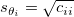 |
(10) |
wobei Cii das Element in der i-ten Zeile und i-ten Spalte der Matrix C ist. Cij ist die Kovarianz zwischen θi und θj.
Sie können wählen, ob s2 ausgeschlossen wird, wenn die Kovarianzmatrix berechnet wird. Die hat Einfluss auf die Standardfehlerwerte. Beim Ausschließen von s2 deaktivieren Sie das Kontrollkästchen Reduziertes Chi^2 verwenden auf der Seite Erweitert im Bedienfeld Fit-Steuerung. Die Kovarianz wird dann berechnet durch:
|
(11) |
Die Standardfehler sind dann:
|
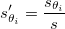 |
(12) |
Die Parameterstandardfehler kann uns einen Eindruck von der Genauigkeit der angepassten Werte geben. Normalerweise sollte der Betrag der Standardfehlerwerte niedriger sein als die angepassten Werte. Wenn die Standardfehlerwerte größer sind als die angepassten Werte kann das Anpassungsmodell überparameterisiert sein.
Origin schätzt die Standardfehler für die abgeleiteten Parameter gemäß der Fehlerverbreitungsformel, eine approximative Formel.
sei die Funktion mit einer Kombination von (linearen oder nichtlinearen)  Variablen
Variablen  .
.
Die allgemeine Regel der Fehlerverbreitung ist:

wobei  der Kovarianzwert für und ist.
der Kovarianzwert für und ist.
Sie können wählen, ob die mittlere Residuenvarianz  ausgeschlossen werden soll, wenn die Kovarianzmatrix 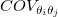 berechnet wird. Dies beeinflusst die Werte des Standardfehlers für abgeleitete Parameter. Beim Ausschließen von deaktivieren Sie das Kontrollkästchen Reduziertes Chi^2 verwenden auf der Seite Erweitert im Bedienfeld Fit-Steuerung.
ausgeschlossen werden soll, wenn die Kovarianzmatrix 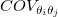 berechnet wird. Dies beeinflusst die Werte des Standardfehlers für abgeleitete Parameter. Beim Ausschließen von deaktivieren Sie das Kontrollkästchen Reduziertes Chi^2 verwenden auf der Seite Erweitert im Bedienfeld Fit-Steuerung.
Verwenden wir zum Beispiel drei Variablen:
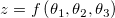
Dann haben wir:
![\sigma_z^2 = \left (\frac {\partial z}{\partial \theta_1} \right )^2 \sigma_{\theta_1}^2 + \left (\frac {\partial z}{\partial \theta_2} \right )^2 \sigma_{\theta_2}^2 + \left (\frac {\partial z}{\partial \theta_3} \right )^2 \sigma_{\theta_3}^2 + 2 \left (\frac {\partial z}{\partial \theta_1} \frac {\partial z}{\partial \theta_2} \right ) COV_{\theta_1 \theta_2} + 2 \left (\frac {\partial z}{\partial \theta_1} \frac {\partial z}{\partial \theta_3} \right ) COV_{\theta_1 \theta_3} + 2 \left (\frac {\partial z}{\partial \theta_2} \frac {\partial z}{\partial \theta_3} \right ) COV_{\theta_2 \theta_3}](../images/Theory_of_Nonlinear_Curve_Fitting/math-37a2eeec5b384e170c8c1a0ddda74e60.png "\sigma_z^2 = \left (\frac {\partial z}{\partial \theta_1} \right )^2 \sigma_{\theta_1}^2 + \left (\frac {\partial z}{\partial \theta_2} \right )^2 \sigma_{\theta_2}^2 + \left (\frac {\partial z}{\partial \theta_3} \right )^2 \sigma_{\theta_3}^2 + 2 \left (\frac {\partial z}{\partial \theta_1} \frac {\partial z}{\partial \theta_2} \right ) COV_{\theta_1 \theta_2} + 2 \left (\frac {\partial z}{\partial \theta_1} \frac {\partial z}{\partial \theta_3} \right ) COV_{\theta_1 \theta_3} + 2 \left (\frac {\partial z}{\partial \theta_2} \frac {\partial z}{\partial \theta_3} \right ) COV_{\theta_2 \theta_3}")
Jetzt sei der abgeleitete Parameter  und die Anpassungsparameter seien . Der Standardfehler für den abgeleiteten Parameter ist .
und die Anpassungsparameter seien . Der Standardfehler für den abgeleiteten Parameter ist .
Origin bietet zwei Methoden zum Berechnen der Konfidenzintervalle für Parameter: Asymptotisch-Symmetrisch und Modellvergleich.
Eine Annahme in der Regressionsanalyse ist, dass die Daten normalverteilt sind, so dass wir die Standardfehlerwerte verwenden können, um die Parameterkonfidenzintervalle zu erzeugen. Bei einem gegebenen Signifikanzniveau α ist das (1-α)x100%-Konfidenzintervall für den Parameter:
|
(13) |
Das Parameterkonfidenzintervall gibt an, wie wahrscheinlich das Intervall den wahren Wert enthält.
Das oben dargestellte Konfidenzintervall ist Asymptotisch, die am häufigsten verwendete Methode zum Berechnen von Konfidenzintervallen. Das "Asymptotisch" meint hier, dass es sich um einen approximativen Wert handelt.
Wenn Sie genauere Werte brauchen, können Sie die Methode des Modellvergleichs verwenden, um das Konfidenzintervall zu schätzen.
Wird die Methode Modellvergleich verwendet, werden die oberen und unteren Konfidenzgrenzen berechnet, indem die Werte für jeden Parameter p gesucht werden, bei dem RSS(j) (das über die verbleibenden Parameter minimiert wird) größer ist als RSS mit einem Faktor von (1+F/(n-p)).
|
|
(14) |
wobei F = Ftable(α, 1, n-p) und RSS die minimale Fehlersumme der Quadrate ist, die während der Anpassungssitzung gefunden wurde.
Sie können entscheiden, einen t-Test für jeden Parameter auszuführen, um zu testen, ob sein Wert gleich Null ist. Die Nullhypothese des t-Tests für den j-ten Parameter ist:
| 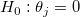 |
Die Alternativhypothese ist:
| 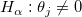 |
Der t-Wert kann wie folgt berechnet werden:
|
|
(15) |
Die Wahrscheinlichkeit, dass H0 in dem t-Test oben wahr ist.
|
|
(16) |
wobei tcdf(t, df) die untere Wahrscheinlichkeit für die studentisierte t-Verteilung mit dem df-Freiheitsgrad berechnet.
Ist eine Gleichung überparametrisiert, bestehen zwischen den Parametern wechselseitige Abhängigkeiten. Die Abhängigkeit des i-ten Parameters wird definiert als:
|
|
(17) |
und (C-1)ii ist das (i, i)-te diagonale Element der Inversen der Matrix C. Liegt dieser Wert nahe bei 1, besteht eine starke Abhängigkeit.
Um weitere Informationen zu erhalten, wie die Werte die Qualität eines Anpassungsmodells bewerten, siehe die Seite Modelldiagnose mit Abhängigkeitswerten.
Das Konfidenzintervall halbe Breite ist:
|
|
(18) |
wobei OEG und UEG das obere Konfidenzintervall bzw. untere Konfidenzintervall ist.
Mehrere Statistikformeln für Anpassungen werden unten zusammengefasst:
Der Freiheitsgrad Fehler Weitere Einzelheiten finden Sie in der ANOVA-Tabelle.
Residuensumme der Quadrate
|
|
(19) |
Der Wert des reduzierten Chi-Quadrats, der gleich der Residuensumme des Quadrats geteilt durch den Freiheitsgrad ist
|
|
(20) |
Der R2-Wert zeigt die Güte eines Fits und kann berechnet werden durch:
|
(21) |
wobei TSS die Gesamtsumme der Quadrate und RSS die Residuensumme des Quadrats ist.
Der korrigierte R2-Wert:
|
|
(22) |
Der R-Wert ist die Quadratwurzel von R2:
|
|
(23) |
Weitere Informationen zu R2, korrigiertem R2 und R finden Sie im Abschnitt Güte des Fits.
Die Quadratwurzel des Mittelwerts des Fehlers oder die Standardabweichung der Residuen ist gleich der Quadratwurzel des reduzierten χ2:
|
|
(24) |
Die ANOVA-Tabelle:
Hinweise: Die ANOVA-Tabelle ist für die Anpassung von impliziten Funktionen nicht verfügbar.
| Freiheitsgrade | Summe der Quadrate | Mittelwert der Quadrate | F -Wert | Wahrsch. > F | |
|---|---|---|---|---|---|
| Modell |
p |
SSreg = TSS - RSS |
MSreg = SSreg / p |
MSreg / MSE |
p-Wert |
| Fehler |
n - p |
RSS |
MSE = RSS / (n-p) |
||
| Unkorrigierte Gesamtsumme |
n |
TSS |
|||
| Korrigierte Gesamtsumme |
n-1 |
TSS korrigiert |
Hinweis: Bei der nichtlinearen Anpassung gibt Origin korrigierte und unkorrigierte Summen der Quadrate aus: Korrigiertes Modell:
|
(25) |
Unkorrigiertes Modell:
|
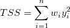 |
(26) |
Der F-Wert ist ein Test, ob das Anpassungsmodell sich signifikant von dem Modell Y = konstant unterscheidet. Zusätzlich werden der p-Wert bzw. die Signifikanzebene mit einem F-Test ermittelt. Wir können die Nullhypothese verwerfen, wenn der p-Wert kleiner als  ist, das heißt, das Anpassungsmodell unterscheidet sich signifikant von dem Modell Y = konstant.
ist, das heißt, das Anpassungsmodell unterscheidet sich signifikant von dem Modell Y = konstant.
Das Konfidenzintervall für die Anpassungsfunktion besagt, wie gut Ihre Schätzung des Werts der Anpassungsfunktion bei bestimmten Werten der unabhängigen Variablen ist. Sie können mit einer Konfidenz von 100α% behaupten, dass der korrekte Wert für die Anpassungsfunktion sich innerhalb des Konfidenzintervalls befindet, in dem α das gewünschte Konfidenzniveau liegt. Dieses definierte Konfidenzintervall für die Anpassungsfunktion wird berechnet mit:
|
|
(27) |
wobei:
|
|
(28) |
Das Prognoseband für das gewünschte Konfidenzniveau α ist das Intervall, in das erwartungsgemäß 100α% aller Versuchspunkte in einer Reihe wiederholter Messungen bei bestimmten Werten unabhängiger Variablen fallen. Dieses definierte Prognoseintervall für die Anpassungsfunktion wird berechnet als:
|
|
(29) |
wobei
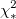 ist das reduzierte 
| Hinweise: Das Konfidenzband und das Prognoseband in dem angepassten Kurvendiagramm sind nicht für die Anpassung von impliziten Funktionen verfügbar. |


\,\!") im ursprünglichen Datensatz wird der entsprechende theoretische Wert bei
im ursprünglichen Datensatz wird der entsprechende theoretische Wert bei  mit bezeichnet
mit bezeichnet  .
.^{-1}s^2\,\!")
=RSS(1+F\frac 1{n-p})")

)\,\!")
_{ii}}")

![RSS(X,\hat \theta )=\sum_{i=1}^n w_i[Y_i-f(x_i^{\prime },\hat \theta )]^2](../images/Theory_of_Nonlinear_Curve_Fitting/math-098376be8e9d0c82d36905f8384a9f90.png "RSS(X,\hat \theta )=\sum_{i=1}^n w_i[Y_i-f(x_i^{\prime },\hat \theta )]^2")


![f(x_{1i},x_{2i},\ldots;\theta _{1i},\theta _{2i},\ldots )\pm t_{(\frac \alpha 2,dof)}[s^2fcf^{\prime }]^{\frac 12}](../images/Theory_of_Nonlinear_Curve_Fitting/math-82c86845ee3d0efa23d2a1ce2450a05f.png "f(x_{1i},x_{2i},\ldots;\theta _{1i},\theta _{2i},\ldots )\pm t_{(\frac \alpha 2,dof)}[s^2fcf^{\prime }]^{\frac 12}")
![f=[\frac{\partial f}{\partial \theta _1},\frac{\partial f}{\partial \theta _2},\cdots ,\frac{\partial f}{\partial \theta _p}]](../images/Theory_of_Nonlinear_Curve_Fitting/math-f04def5c58d56a887955d9132f42b968.png "f=[\frac{\partial f}{\partial \theta _1},\frac{\partial f}{\partial \theta _2},\cdots ,\frac{\partial f}{\partial \theta _p}]")
![f(x_{1i},x_{2i},\ldots;\theta _{1i},\theta _{2i},\ldots )\pm t_{(\frac \alpha 2,dof)}[s^2(1+fcf^{\prime })]^{\frac 12}](../images/Theory_of_Nonlinear_Curve_Fitting/math-29ebc8680acd0d1962dee476a98e9926.png "f(x_{1i},x_{2i},\ldots;\theta _{1i},\theta _{2i},\ldots )\pm t_{(\frac \alpha 2,dof)}[s^2(1+fcf^{\prime })]^{\frac 12}")